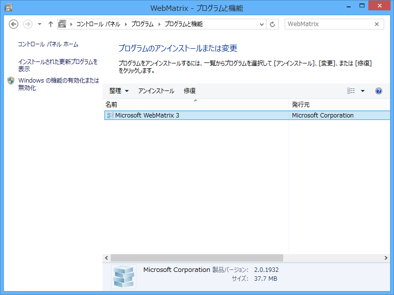
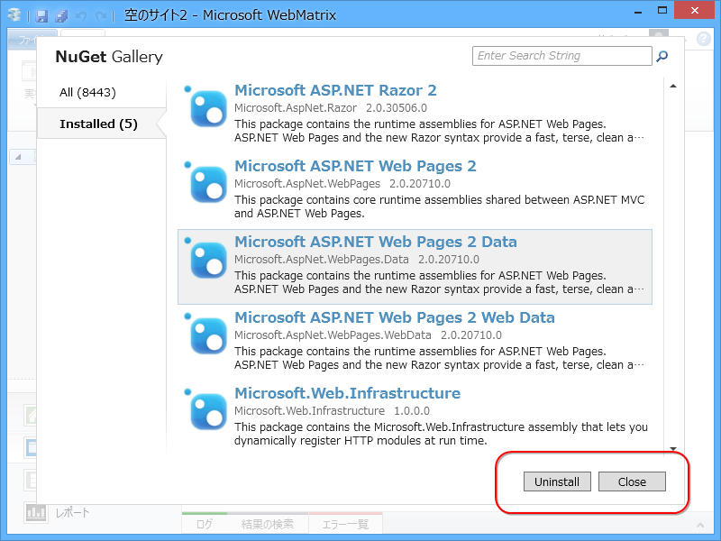

再挑戦: NuGet Pakage Manager 2.5.0 for WebMatrix
執筆日時：

NuGet Pakage Manager 2.5.0 for WebMatrix - だるろぐ を解決せずに放置していたのだけど、@ishisaka さんのツイートを見てもう一回チャレンジしようと思った。
とりあえず AppData 以下の関連フォルダを削除すればいいのね。

%USERPROFILE%\AppData\Local\Microsoft\WebMatrix が関係ありそうなので（これ意外にもある？）……

これをを削除して……

一度アンインストール。
んでもう一回 WebMatrix をインストールして……

NuGet Pakage Manager を更新。そして WebMatrix を再起動させると……どうやら今回は成功したみたい！
New capabilities include those such as 'Update All', 'Minimum NuGet Version', and allowing for overwriting of content files.
とのことなので、活用していきたいですね。
追記
ただ、こんなエラーがでるようになってしまった。
An error occurred.The schema version of 'Microsoft.AspNet.WebPages' is incompatible with version 2.5.40416.9020 of NuGet. Please upgrade NuGet to the latest version from http://go.microsoft.com/fwlink/?LinkId=213942.
System.InvalidOperationException: The schema version of 'Microsoft.AspNet.WebPages' is incompatible with version 2.5.40416.9020 of NuGet. Please upgrade NuGet to the latest version from http://go.microsoft.com/fwlink/?LinkId=213942. 場所 NuGet.Manifest.CheckSchemaVersion(XDocument document) 場所 NuGet.Manifest.ReadFrom(Stream stream, IPropertyProvider propertyProvider, Boolean validateSchema) 場所 NuGet.LocalPackage.ReadManifest(Stream manifestStream) 場所 NuGet.OptimizedZipPackage.EnsureManifest() 場所 NuGet.OptimizedZipPackage..ctor(IFileSystem fileSystem, String packagePath) 場所 NuGet.LocalPackageRepository.OpenPackage(String path) 場所 NuGet.LocalPackageRepository.GetPackage(Func
2 openPackage, String path) 場所 NuGet.LocalPackageRepository.<>c__DisplayClass9.<FindPackage>b__5(String path) 場所 System.Linq.Enumerable.WhereSelectEnumerableIterator2.MoveNext() 場所 System.Linq.Enumerable.WhereSelectEnumerableIterator2.MoveNext() 場所 System.Linq.Enumerable.FirstOrDefault[TSource](IEnumerable1 source) 場所 NuGet.LocalPackageRepository.FindPackage(Func2 openPackage, String packageId, SemanticVersion version) 場所 NuGet.LocalPackageRepository.FindPackage(String packageId, SemanticVersion version) 場所 NuGet.PackageRepositoryExtensions.FindPackage(IPackageRepository repository, String packageId, SemanticVersion version, IPackageConstraintProvider constraintProvider, Boolean allowPrereleaseVersions, Boolean allowUnlisted) 場所 NuGet.DataServicePackage.EnsurePackage(IPackageCacheRepository cacheRepository) 場所 NuGet.DataServicePackage.GetSupportedFrameworks() 場所 NuGet.PackageRepositoryExtensions.<>c__DisplayClass2a.<SupportsTargetFrameworks>b__29(FrameworkName t) 場所 System.Linq.Enumerable.Any[TSource](IEnumerable1 source, Func2 predicate) 場所 NuGet.PackageRepositoryExtensions.SupportsTargetFrameworks(IEnumerable1 targetFramework, IPackage package) 場所 NuGet.PackageRepositoryExtensions.<>c__DisplayClass27.<GetUpdatesCore>b__23(IPackage candidate) 場所 System.Linq.Enumerable.WhereEnumerableIterator1.MoveNext() 場所 System.Collections.Generic.List1.InsertRange(Int32 index, IEnumerable1 collection) 場所 NuGet.PackageRepositoryExtensions.GetUpdatesCore(IPackageRepository repository, IEnumerable1 packages, Boolean includePrerelease, Boolean includeAllVersions, IEnumerable1 targetFramework, IEnumerable1 versionConstraints) 場所 NuGet.DataServicePackageRepository.GetUpdates(IEnumerable1 packages, Boolean includePrerelease, Boolean includeAllVersions, IEnumerable1 targetFrameworks, IEnumerable1 versionConstraints) 場所 NuGet.PackageRepositoryExtensions.GetUpdates(IPackageRepository repository, IEnumerable1 packages, Boolean includePrerelease, Boolean includeAllVersions, IEnumerable1 targetFrameworks, IEnumerable1 versionConstraints) 場所 NuGet.WebMatrix.WebProjectManager.GetPackagesWithUpdates(String searchTerms, Boolean filterPreferredPackages) 場所 NuGet.WebMatrix.NuGetPackageManager.GetPackagesWithUpdates() 場所 NuGet.WebMatrix.NuGetModel.GetPackagesWithUpdates() 場所 NuGet.WebMatrix.FilterManager.GetUpdatePackages() 場所 System.Threading.Tasks.Task`1.InnerInvoke() 場所 System.Threading.Tasks.Task.Execute()

ほんとはあるはずのボタンが……

Microsoft.AspNet.WebPages のときだけない。
まぁ、このままでも使えるみたいだけど、毎回エラーダイアログがでるのは精神的によろしくないなぁ。
少しお門違いかなと思いつつも（WebMatrix/NuGet ではなく、パッケージの方の問題だと思う）、WebMatrix の UserVoice に似たようなバグフィックスの要望が上がっていたので、それに Vote しておいた。